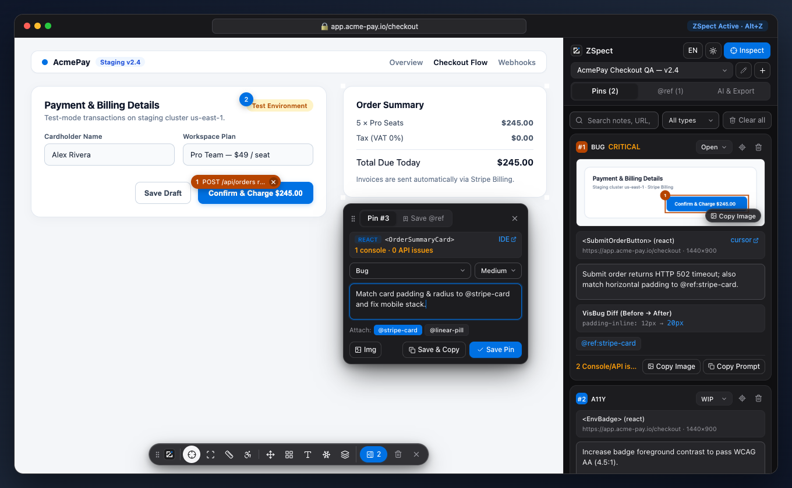

Visual feedback & inspection for AI agents and QA
Zero-install browser extension that turns any webpage into structured context.
ZSpect turns live DOM elements, visual layout diffs, cross-site design references, and console/network diagnostics into structured context that AI coding agents (Claude Code, Cursor, Antigravity, Windsurf, Codex) and QA teams can act on immediately.
Unlike npm-based toolbars, ZSpect runs as a pure Manifest V3 browser extension—meaning it works out of the box on localhost, staging previews, production deployments, and any public website with 0 KB idle overhead.

How you use it
- 1.Press
Alt + Z(or click the ZSpect toolbar icon) on any webpage to mount the floating HUD - 2.Hover any element to inspect its component name, dimensions, or WCAG contrast
- 3.Click an element (or drag an area marquee with
R) to open the Pin Composer - 4.Write a note, optionally attach a saved
@refdesign blueprint, and click Save Pin - 5.Open the Side Panel to copy the compiled AI Prompt, copy annotated PNGs, or export a 2-sheet
.xlsxExcel report
✕ or press Esc to collapse ZSpect into a draggable 44px circular logo button in the corner—all page listeners detach immediately until you click it again.
How agents use it
Pointing to an element beats describing it in prose. When you paste a ZSpect prompt into your coding agent, it receives the exact React/Vue/Svelte component stack, filepath:line:column coordinates, resilient CSS selector, Before → After VisBug style diffs, and recent console.error or failed API calls—so it can jump straight to the file without grep guesswork.
Animation scrubber demo
When debugging CSS transitions or Web Animations, ZSpect's Freeze & Motion tool pauses document.getAnimations() and lets you scrub frame-by-frame from 0% to 100%. Try dragging the scrubber below: